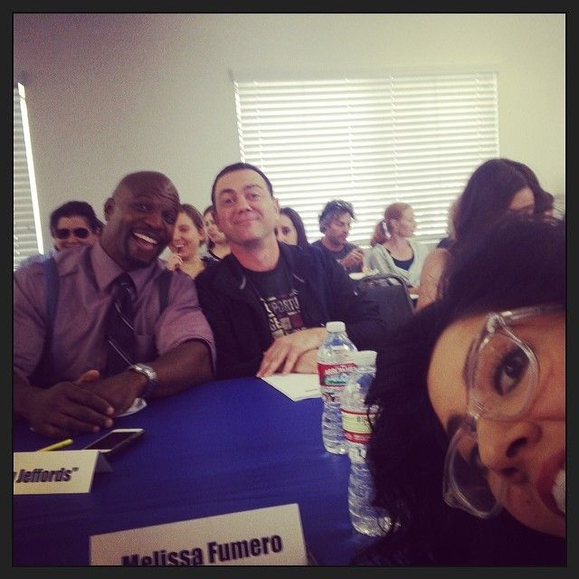
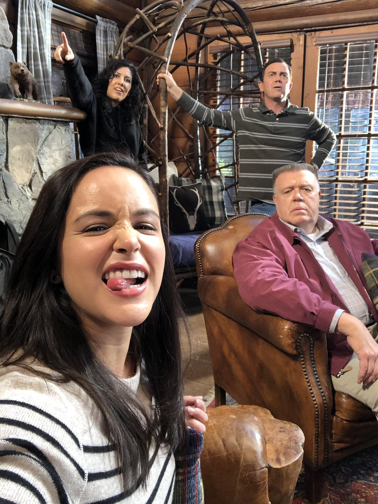
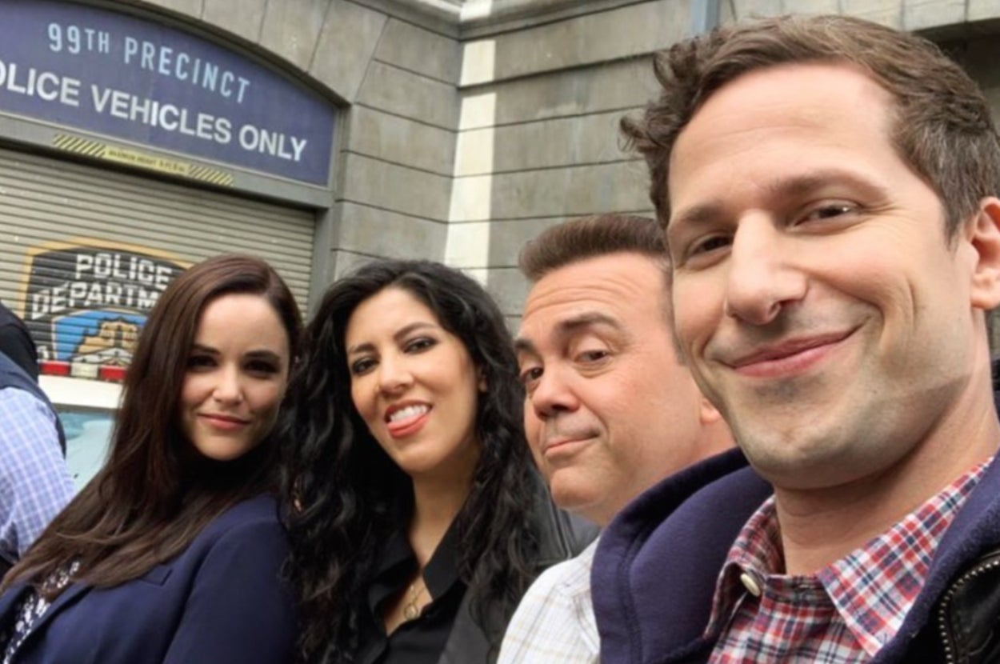
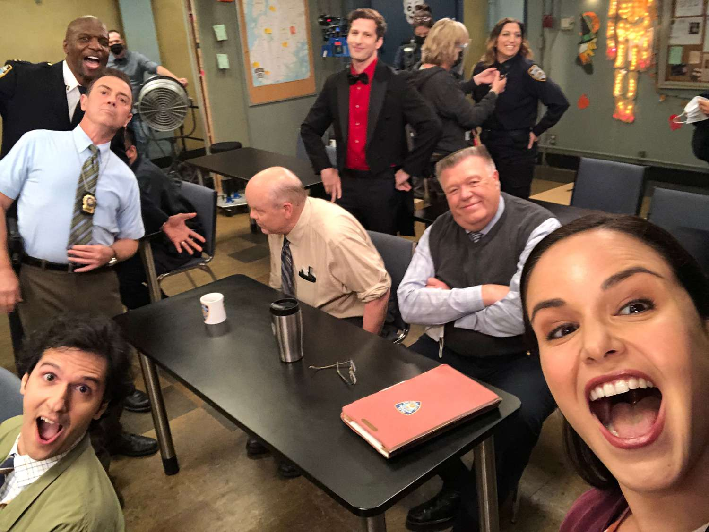
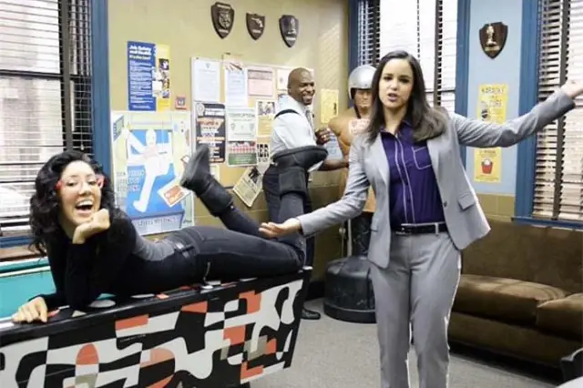
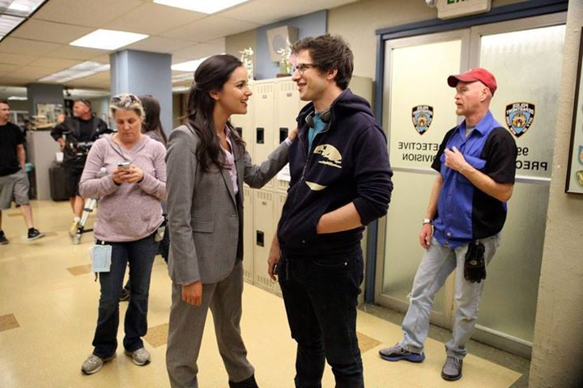
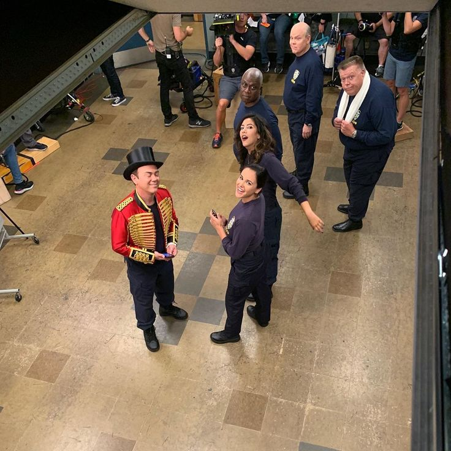

ARCHIVED
CASE ARCHIVE: PRODUCTIONS
← Back to Case Board
This page compiles the production details behind Brooklyn Nine-Nine, including creators, showrunners, filming locations, and fun behind-the-scenes trivia. Understanding the production gives insight into the creative decisions that shaped the 99th Precinct’s stories and characters.
Creators & Showrunners
- Creators: Michael Schur & Dan Goor
- Executive Producers: Michael Schur, Dan Goor, Luke Del Tredici
- Showrunners: Dan Goor (Seasons 1–7), Luke Del Tredici (Season 8)

Creators Michael Schur (left) and Dan Goor (right).
Filming & Locations
- Mainly filmed at CBS Studio Center, Studio City, California
- Exterior shots of the NYPD precinct used Brooklyn locations
- Episodes occasionally shot on location in New York City for special storylines
The cast filming an outdoor scene on location in Brooklyn.
Trivia & Fun Facts
- The show’s theme song was composed by Dan Marocco
- Brooklyn Nine-Nine was originally on Fox (2013–2018) then picked up by NBC (2019–2021)
- The series won a Golden Globe for Best Television Series – Musical or Comedy in 2014
- Cast chemistry was a key factor in the show’s longevity








Cast members sharing a laugh on set.